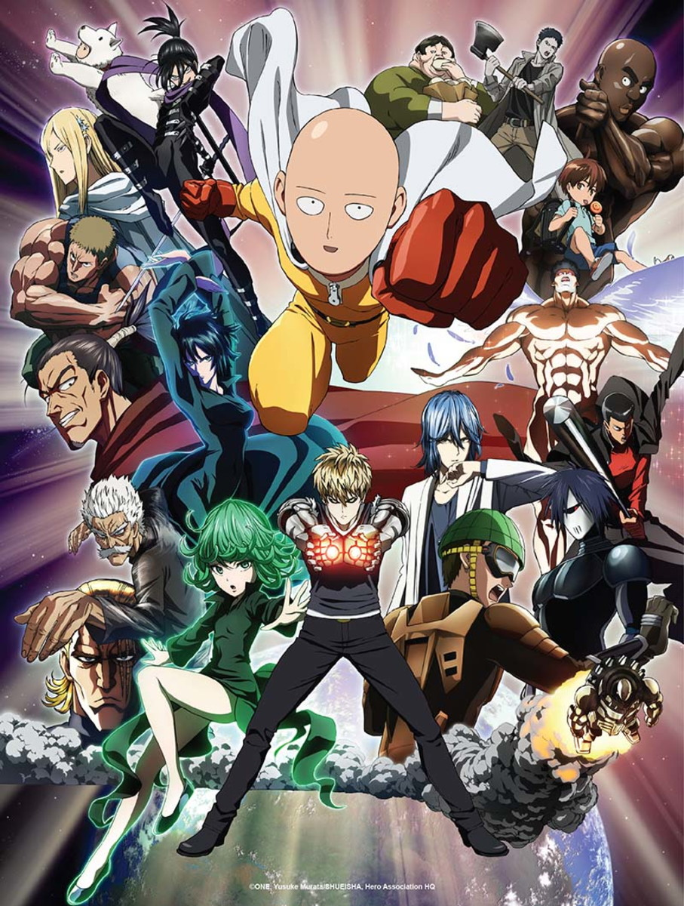

One Punch Man
A história se passa em cidades japonesas fictícias, especialmente na chamada de Cidade Z, onde aparecem com grande frequência seres monstruosos que causam vários desastres. Após treinar durante três anos, Saitama, o protagonista, se tornou um herói não oficial incrivelmente forte que derrota monstros ou outros vilões com um único soco. No entanto, devido à sua força esmagadora, Saitama tornou-se entediado e está constantemente tentando encontrar adversários mais fortes que podem lutar de igual contra ele.
Em seus combates, ele conhece novos amigos, inimigos e o seu próprio discípulo, o ciborgue Genos, onde posteriormente os dois entram na Associação dos Heróis, a fim de se tornarem heróis oficiais e ganharem reconhecimento e respeito por todos os seus esforços para manter as cidades a salvo. Apesar de derrotar seres extremamente fortes que até mesmo os maiores heróis da Associação são incapazes de derrotar, Saitama é desrespeitado devido a sua aparência física simples, e alguns o acusam de ser um herói falsificado. Apenas um pequeno número de indivíduos reconhecem seu incrível talento e humildade com os outros.

Voltar